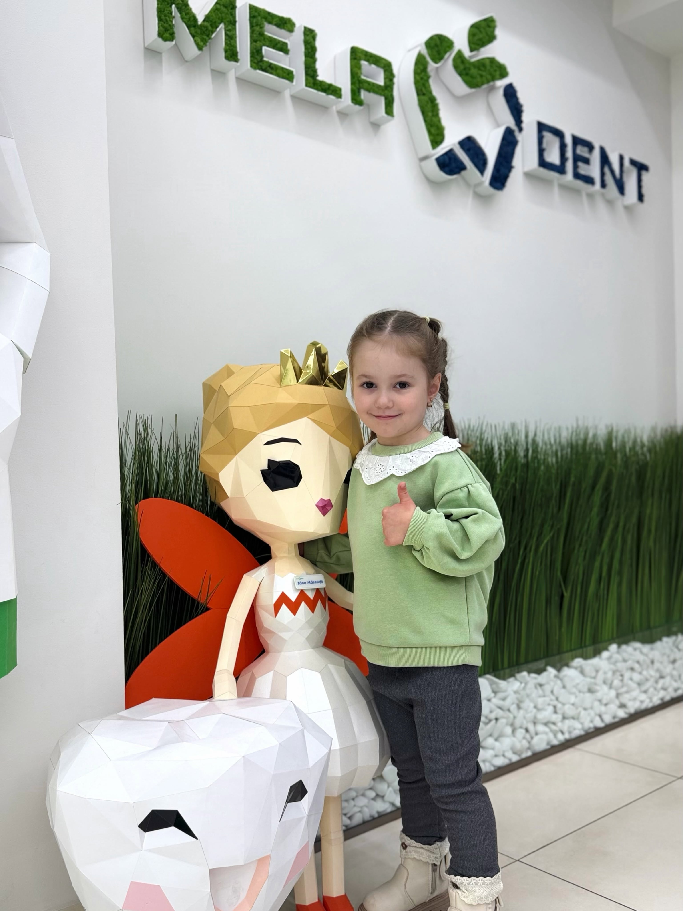
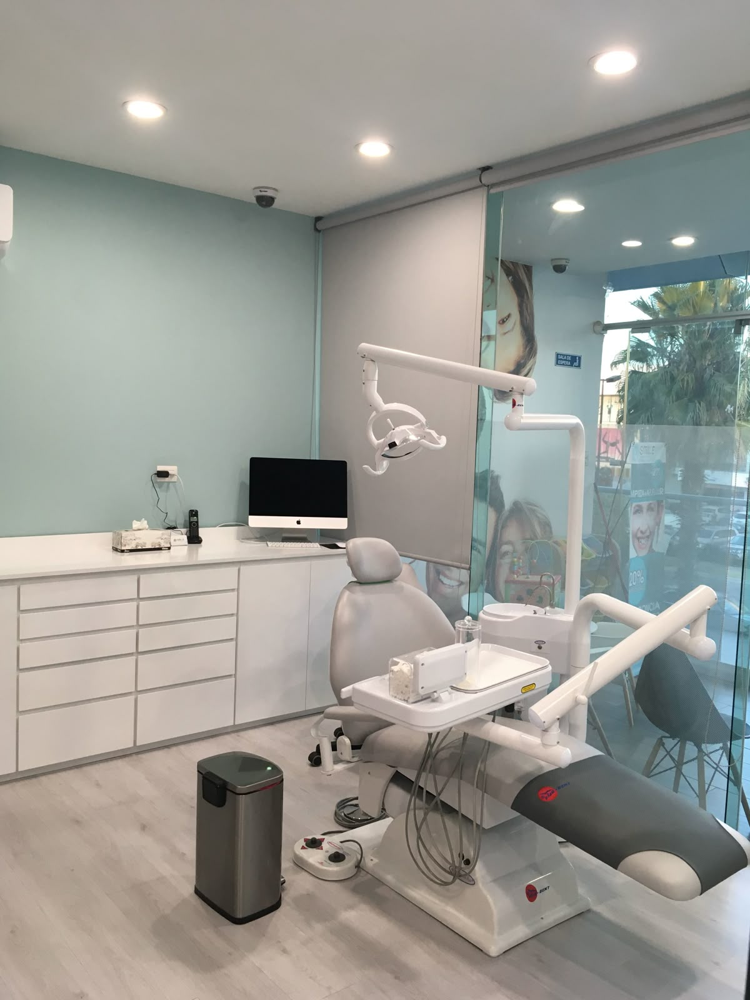
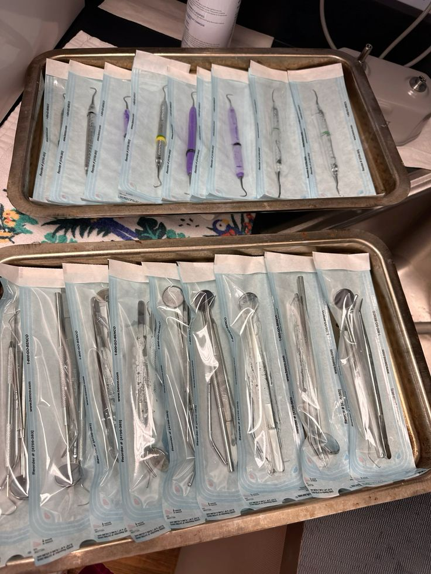
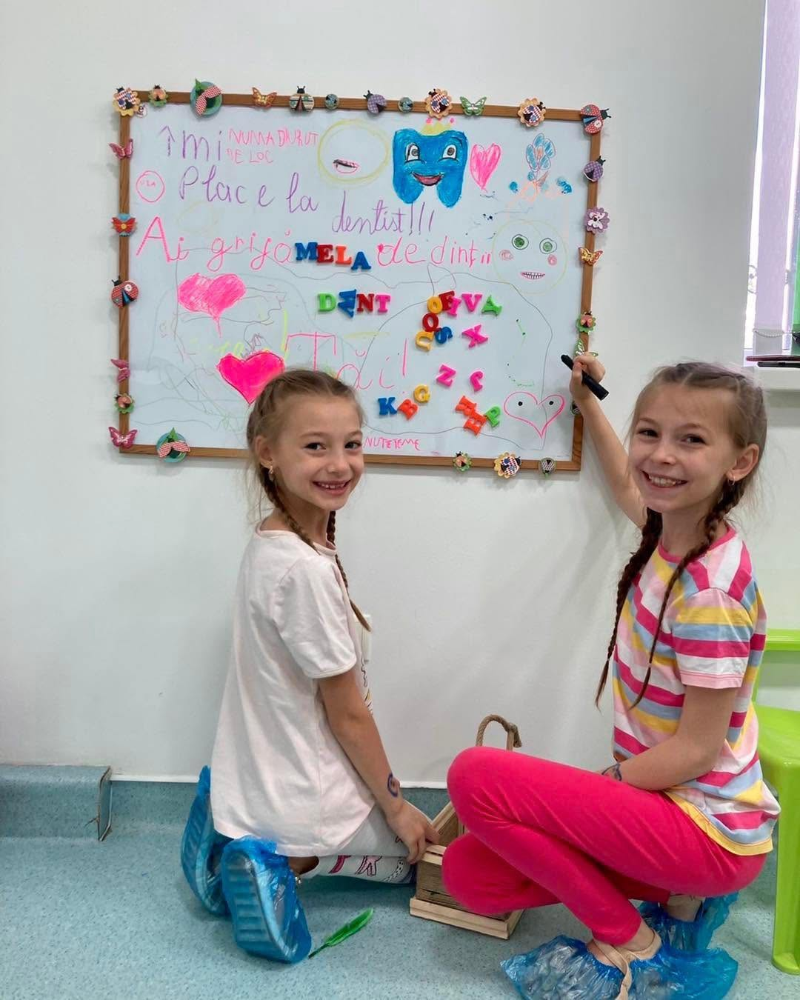

Terapie copii
Tratamentul cariilor, pulpitelor și restaurări delicate la dinții de lapte și permanenți, fără frică și lacrimi.
Pregătim zâmbete fără frică…
Mela Dent în Chișinău: terapie copii, extracții blânde, radiografie și produse igienă dentară — cu răbdare, fără frică și fără lacrimi.
Mereu alături de zâmbetul copilului tău — de la diagnostic și tratament până la îngrijirea zilnică acasă.
Tratamentul cariilor, pulpitelor și restaurări delicate la dinții de lapte și permanenți, fără frică și lacrimi.
Extracții dentare blânde și sigure pentru copii și adolescenți, cu anestezie atentă și atmosferă calmă.
Investigații imagistice rapide și precise pentru un diagnostic corect și un plan de tratament clar.
Periuțe, paste și soluții potrivite vârstei copilului, alese împreună cu medicul pentru îngrijire acasă.
Cunoaștem medicul, arătăm instrumentele prietenos și construim încrederea copilului în ritmul său.
Igienizare profesională, sigilare și îndrumare practică pentru părinți și copii.
Transparență de la început, ca să planifici vizita și tratamentul din timp.
Depinde de vârsta copilului, de rezultatul radiografiei și de etapa tratamentului. După consultație, medicul prezintă planul și devizul clar.
Specialiști care știu să vorbească pe limba copiilor și să le ofere siguranță.
Tratament blând al cariilor și canalelor la copii, acomodare și restaurări estetice.
Extracții delicate la copii și adolescenți, proceduri chirurgicale în condiții sigure.
Radiografie precisă pentru evaluarea dinților de lapte și permanenți înainte de tratament.
Igienizare blândă, prevenție și selecția produselor de igienă dentară pentru acasă.
Glisează cursorul pentru a vedea diferența după tratament.
Experiențe reale ale familiilor care vin la Mela Dent cu copiii.
Copilul a intrat cu emoții, dar după câteva minute de acomodare s-a relaxat complet. Totul a decurs calm și fără lacrimi.
Am făcut radiografie și am primit un plan clar. Extracția și tratamentul au fost blânde, iar planul — foarte transparent.
Ne-au ajutat și cu produsele de igienă dentară pentru acasă. Acum copilul nu se mai teme de dentist și periază dinții cu plăcere.
Spații luminoase, atmosferă prietenoasă și sterilitate riguroasă.




La Mela Dent suntem mereu alături de zâmbetul copilului tău — oferim terapie copii, extracții, radiografie și produse igienă dentară într-un cadru prietenos.
Patru pași calmi, de la programare până la un zâmbet senin.
Sună la 07 800 60 90 sau lasă numărul de telefon, iar administratorul Mela Dent te va contacta pentru o programare comodă.